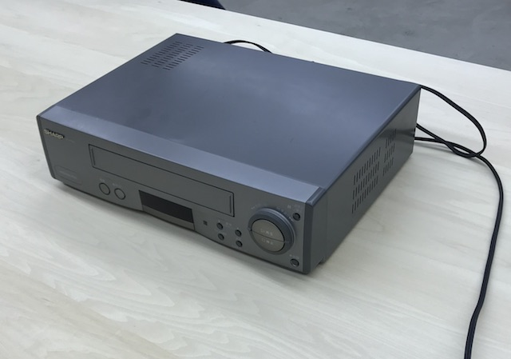
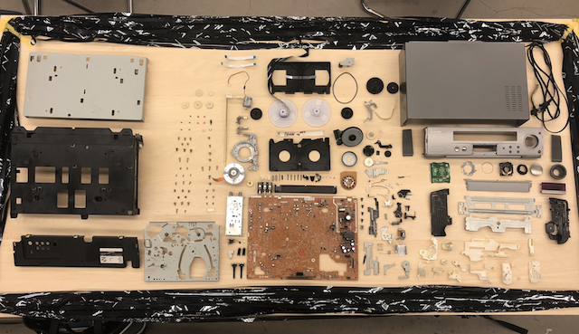
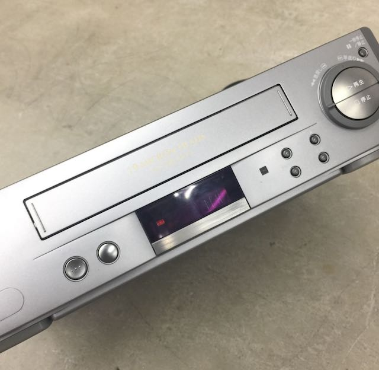
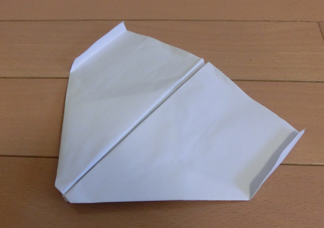
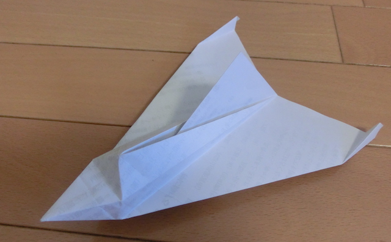

4/13.14.18
解体・ビデオカセットレコーダー
使われなくなったビデオカセットレコーダーを解体し、その後もとどおりに組み立てるという作業を行った。
SHARP VC-HF630 1997年製

主な部品構成
・電力供給部品（電源コードなど）
・伝達部品（ケーブルや視覚情報を伝達する液晶・信号をテレビに送るRCA端子）
・機構部品（頑丈にしたり繋げて組み上げる部品・フレーム。）
・記録回収部品（レコード回したり磁気読み取ったりする部品）
・回路部品（↑が送った信号を編集する機構・主に基盤）
解体して部品を並べる

ここから元どおりに戻す
基盤の配置を戻したり、うまくカセットテープが出なかったりと苦戦したが、電気がつくところまでは戻すことができた。

まとめ
初めてのグループ作業ということもあり、それぞれの役割分担がうまくできていなかったのでなにをすれば良いのかわからない時があった。
また自分の想像以上にたくさんの部品があり、写真や記録をしっかりと取っていなかったために組み立て時に苦戦した。
今回の改善点
今回のワークショップで記録することの大切さがわかった。記録をしておけば組み立て時に困る事も少なかったはずだし、
後でなにをしたか自分でも見返すことができる。次回からグループ活動をするときは、初めにそれぞれの役割を決めてから行いたい。
また個人的に難しかったのは、解体したパーツを関連づけて並べるという作業だ。
それを行うには、それぞれのパーツの用途や特性をよく知っておく必要があり、いかに調査が重要なのかを痛感した。
6/7.8
紙飛行機 滞空時間世界記録に挑む
京都造形芸術大学体育館内でギネス記録を目指した。
現在の世界記録は戸田拓夫さんが記録した29.2秒ということから、目標時間を30秒に設定。
6/7 制作
インターネットで様々な紙飛行機を調べ、一番よく飛ぶと思われる飛行機を選ぶ。
今回初めに選んだのは、スカイキングと呼ばれている飛行機。

飛ばしてみるとよく飛ぶが教室内では限界があるので、明日の体育館で飛ばすことにした。
次に選んだのは、普通のものとは少し違う通称ジュピターと言われている立体紙飛行機。

こちらもよく飛ぶが、教室内では限界があるため明日の体育館で飛ばすことにした。
他にも様々なものを調べ、制作しているうちに
尾翼を上にあげれば上に飛んでいき、下に下げれば下に飛ぶということがわかった。
6/8 フライト
昨日制作した飛行機を飛ばす。
まっすぐには飛ぶが、今回の目標は滞空時間なので旋回することが必要だと考えた。
紙飛行機を旋回させるには左右どちらかの尾翼を下に、もう片方を上にあげれば良いことは昨日の調査で分かっていたがうまく旋回しないので微調整を重ねる。
実測
記録は約9秒で30秒とは程遠い結果になった。
return